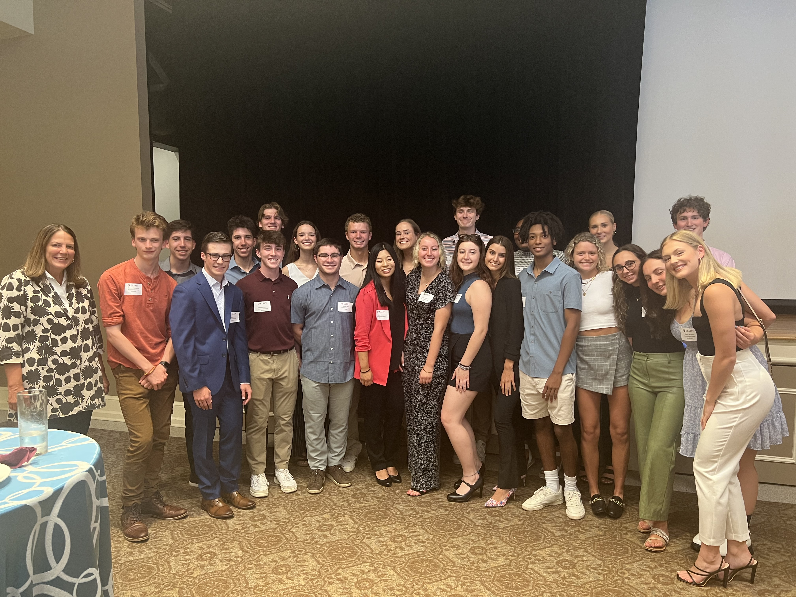

Hi! My name is Devon Rocke and I am a freshman at Elon University. I was born in Los Angeles but grew up just outside Philadelphia, moving a couple times before settling in Devon, Pennsylvania. I initially came to Elon as an Undeclared Communications major before stumbling into the world of film and loving it. I look forward to the next four years to strengthen my passion for the craft and gaining insight into what a job in Cinema and Television Arts entails.

As a
Communications Fellow as part of Elon's School of Communications, I am one of less than 30 students who
gets the opportunity to work more closely with professors and have access to classes made of all Fellows. As
part of my program, I travel with my cohort to locations such as Atlanta, Tampa, and Orlando to visit companies
and gain experience in a variety of areas of Communications, including Strategic Communications and Communication Design.
To document my trip, called The Florida Experience, I worked with one of my classmates to create a video on Adobe Suites.
I began my CTA career working on the set of student film Confessions of a Productive Mind as a grip. I now plan to
work on a number of student films in positions ranging from Production Design PA to 1st AC. Above all,
I love the world of film and cannot wait to see what future projects will bring.
Click here to check out one of my videos!